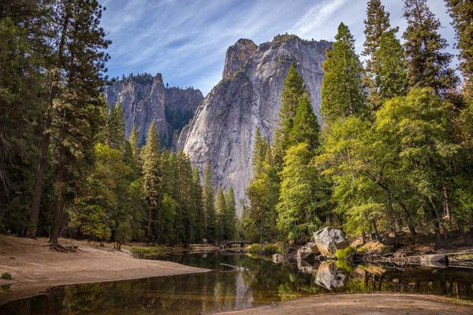
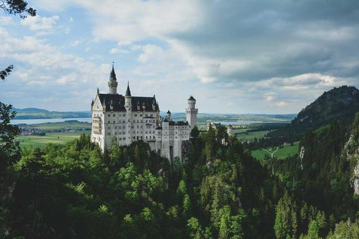

Lugares de interés
- Paseo del Buen Pastor

- Reserva Natural Sierras Chicas

- Manzana Jesuítica

Propuestas culturales y actividades
La ciudad de Córdoba cuenta con una vibrante red de museos, centros culturales y paseos urbanos que ofrecen actividades estables, muestras de arte contemporáneo y recorridos históricos durante todo el año.